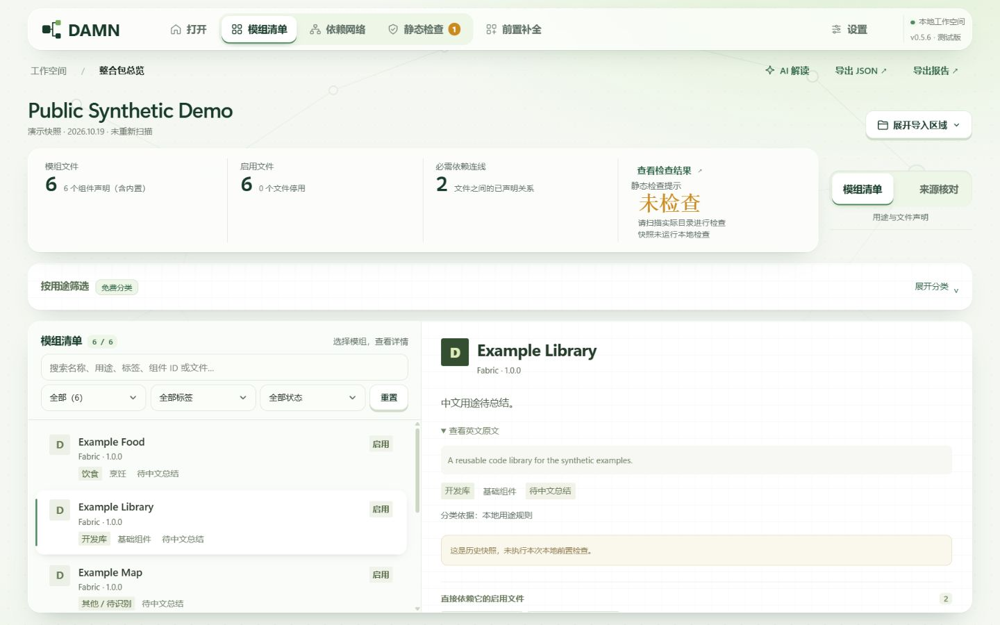
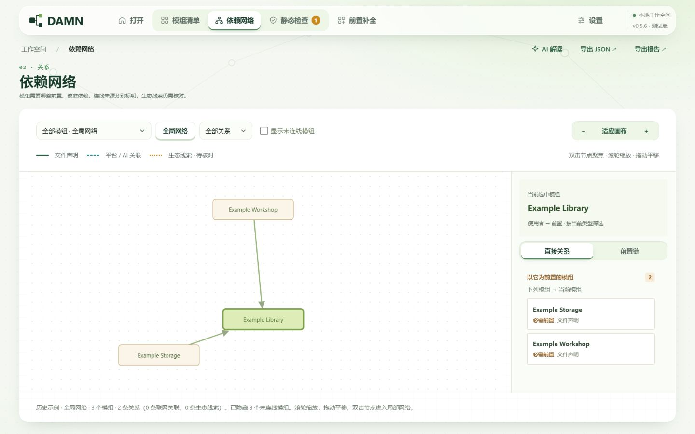
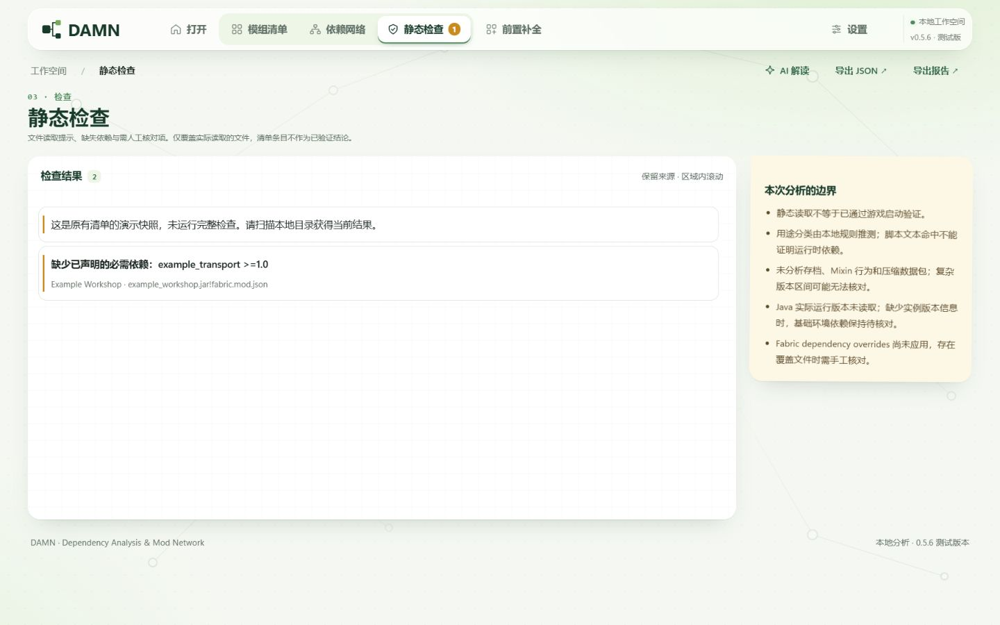
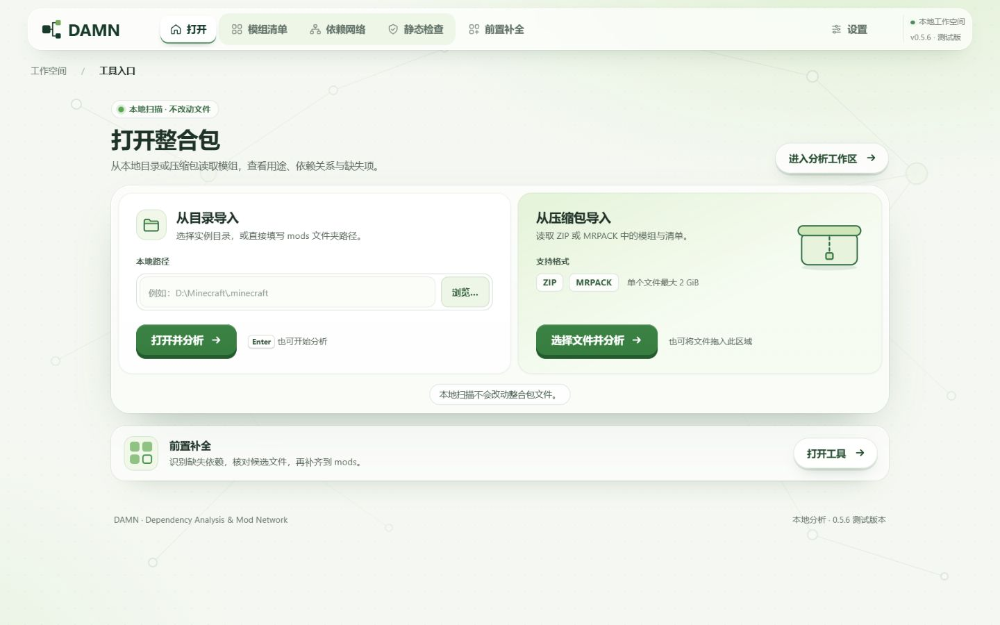

必须配置 AI 才能使用吗？
不需要。基础本地扫描、模组元数据读取与声明依赖分析无需 AI 密钥。配置 AI 后，相关功能可能向你指定的服务发送分析上下文。
DAMN 是桌面端 Minecraft 整合包静态分析工具。扫描本地模组，展开声明依赖，把需要核对的问题摆到眼前。
公开版本 0.5.6 · 通过 Python 3.11+ 从源码运行
选择一个模组，查看它需要什么。
ExampleWorkshop 声明依赖 ExampleLibrary；另缺少 example_transport ≥1.0。
证据：本地 JAR 声明静态依赖结果不等于游戏能够启动。
同一份整合包，用不同视角核对。先看本地证据，再看补充信息，让每个结论都有来处。
文件与元数据放在一起，先确认你正在分析什么。
左右滑动查看三个视角；点按图片可放大。

文件与元数据放在一起，先确认你正在分析什么。

依赖网络呈现模组之间的声明关系。选中一个节点，查看直接关联，区分已有前置与待核对的缺项。
静态检查帮助定位缺失依赖、版本条件等问题。结果是排查线索；实际加载、运行表现仍需在游戏中验证。

导入、扫描、核对。保留本地证据，再按需要补充联网信息。
选择本地模组目录，或导入 ZIP / MRPACK 整合包。
解析本地模组元数据与声明依赖，整理清单、关联与静态检查结果。
需要补充前置时，先核对候选文件；下载与安装操作由用户确认。

当前公开版本 0.5.6 提供源码，需要 Python 3.11+。Windows 桌面模式还需要 Microsoft Edge WebView2 Runtime。环境准备与启动方式以仓库说明为准。
阅读运行说明分析发生在桌面应用中。联网补全与 AI 配置决定哪些上下文会离开本机。
CurseForge 接入仍待 API 审核与后续实现核对。拟议用途为识别本地文件、获取元数据与依赖；仅在平台允许且用户确认后下载获授权的文件。
本项目是独立个人项目，未宣称获得 CurseForge 官方背书。
DAMN · Dependency Analysis & Mod Network。一个围绕 Minecraft 整合包依赖与静态证据展开的个人项目。
不需要。基础本地扫描、模组元数据读取与声明依赖分析无需 AI 密钥。配置 AI 后，相关功能可能向你指定的服务发送分析上下文。
当前公开版本 0.5.6 通过源码提供。本页的按钮指向实际 GitHub 仓库；请按仓库说明准备 Python 3.11+ 环境并运行。
不能据此保证。DAMN 做的是静态分析，无法覆盖游戏运行时的所有交互、配置与环境差异。请结合日志和实际游戏测试继续核对。
桌面应用的联网补全默认开启，可关闭。启用时会按所用服务发送模组名称、哈希或平台标识；已配置的 AI 也可能收到上下文，并在补全时自动被调用。详情见本页“数据与 API”。
公开源码使用自定义非商业许可证。请直接阅读仓库 LICENSE.txt 中的授权范围；如需核对超出许可范围的用途，请在项目仓库提交 Issue。
不是。这是独立个人项目。CurseForge 接入仍待 API 审核与后续实现核对；平台名称仅用于说明拟议的集成用途。